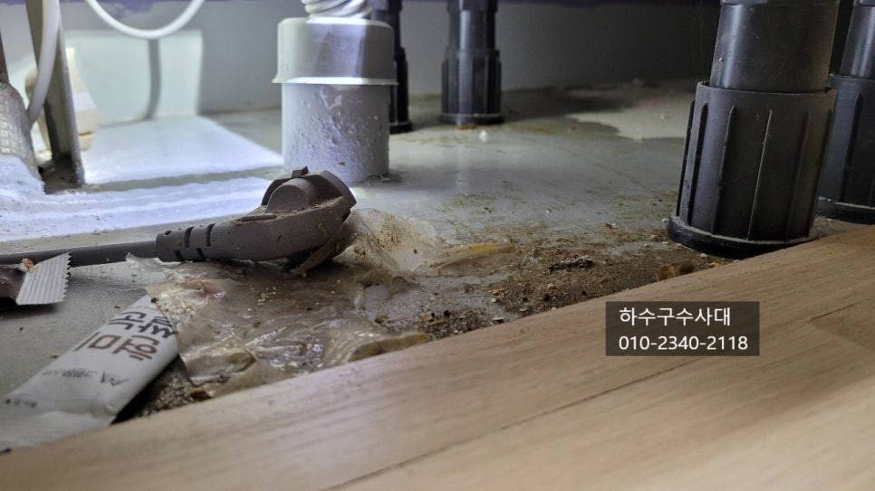
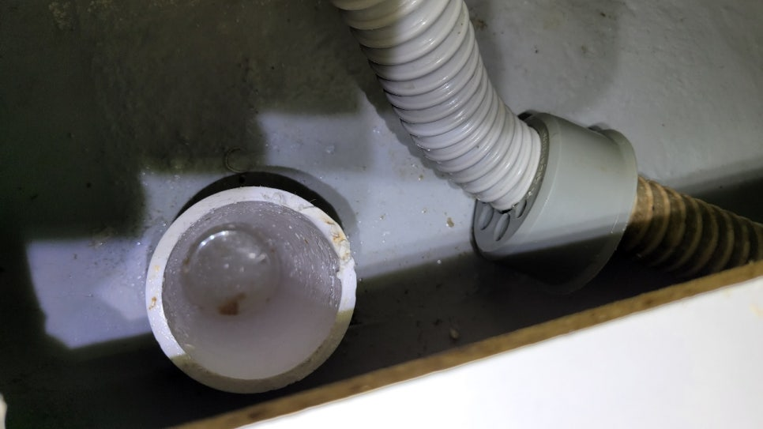
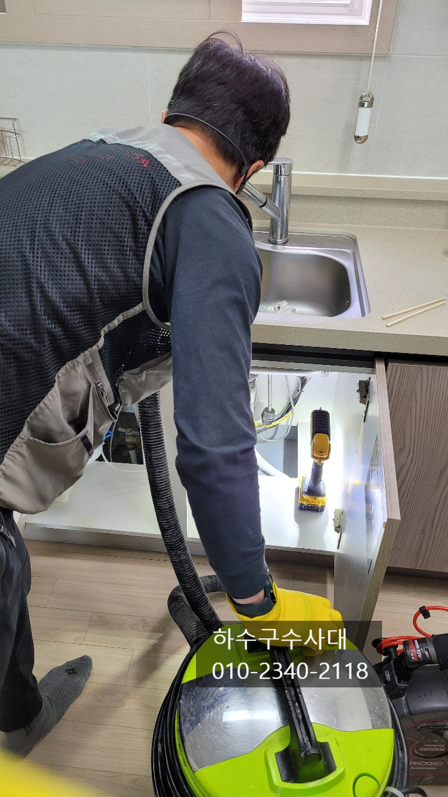
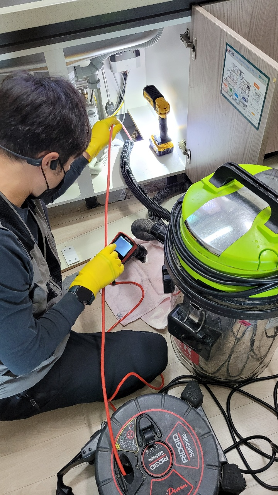
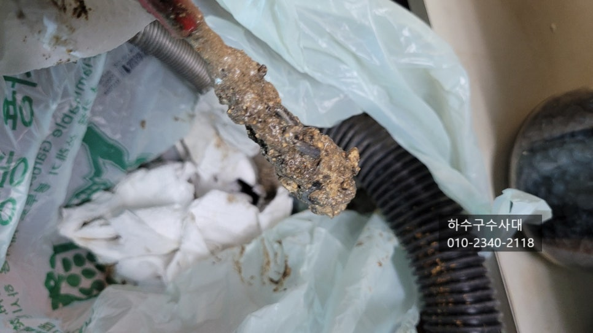
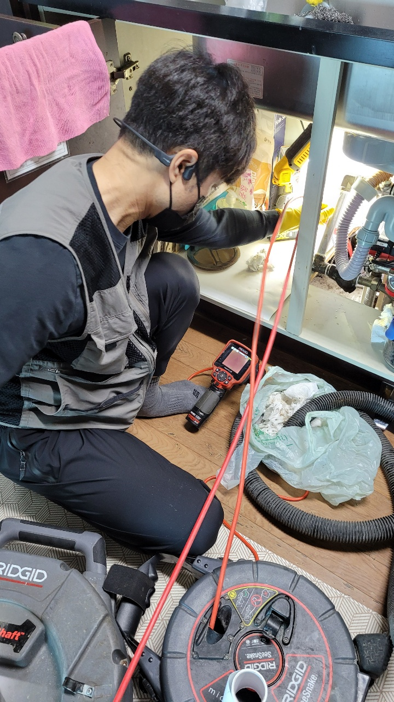
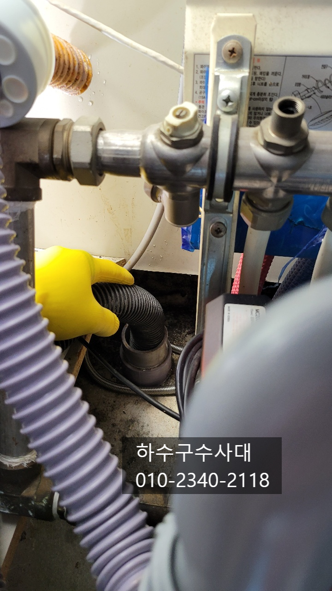

🏠 동안구싱크대막힘 부림동 부흥동 평촌 하수구막힘
용인 싱크대막힘 전문 시공 후기

📋 작업 개요
- 위치: 용인
- 서비스 유형: 싱크대막힘, 하수구막힘, 배관막힘, 역류해결, 뚫는업체, 고압세척
- 작업 일시: 2021. 11. 15. 22:59
- 업체명: 하수구수사대 (010-5615-2118)
🔍 문제 상황
동안구싱크대막힘 부림동 부흥동 평촌 싱크대막힘
안녕하세요
요즘 식생활변화와 코로나 때문에
집에서 식사를 하는 횟수가 많아졌는데요
서구화된 식습관과 기름진 음식을 많이 섭취하고
기름진 음식을 씻어 흘려보내는 하수구가 문제가
점차 증가하고 있는습니다.
정상적인 배관구조로 기울기가 좋은 곳은
기름이 잘 끼지 않지만 구배가 좋지않고
물이 배관에 고여있는 구간이 있다면
기름이 붙는 속도가 빠르게 마련입니다.
오늘은 싱크대막힘현장에 대해 포스팅 하겠습니다.
동안구싱크대막힘 부림동 부흥동 평촌 하수구막힘
싱크대배관이 막히게 되면 물이 넘쳐 바닥으로 흐르게 되는데요
일반적으로 물을 틀어놓을때는 넘치지않고
물을 한번에 부을때 넘치는 증상도 있습니다.
또는 물이 전혀나가지 않고 물이 바닥으로 새어나오는

🔎 원인 분석
💡 전문가 진단: 하수구수사대010-2340-2118
증상이 있습니다.
모두 배관이 막혀서 발생하는 증상입니다.
싱크대막힘의 대부분의 주요원인은 기름슬러지 인데요
기름이 배관에 점차 쌓이면서 딱딱하게 굳게 됩니다.
보통은 구배가 좋지않고 꺽여있는 배관구조로
되어있어 물의 흐름이 원활하지 않아
생기게 됩니다.
막힘현상으로 대부분 가정집에서 해볼수 있는 방법은
펑크린이나 가성소다 같은 배관세정제를
넣어 주는데 간혹 뚫리는 경우도 있지만
이미 배관에 고체화된 기름덩어리가 있다면
막힘증상이 더욱 심해지게 되는 경우도 많습니다.
예를들면 물을 틀면 내려는 갔던 물이
세정제를 넣으면서 아예물이 내려가지 않고
막혀있는 경우가 생기게 됩니다.
이유는 배관에 붙어있던 기름덩어리가 떨어져
오히려 막히 증상이 더욱 심해지는 것이죠.
가장좋은 것은 예방입니다.

🔧 작업 과정
꾸준한 관리로 막힘이 발생하지 않게 관리를
해주면 좋은데요 예를들면 한달에 한번정도
배관에 세정제를 넣어 관리를 하는 방법과
설거지후 물을 충분히 내려주어 배관에
기름이 쌓이지않게 하는것입니다.
하지만 하수구배관은 눈에 보이지않기 때문에
배관상태를 확인할수가 없는게 현실입니다.
테스트를 해보는방법이 있는데요 물을 한번에
받아서 내려보는 것입니다. 한번에 많은양이
배출될때 물이 역류하지않고 잘 내려간다면
배관상태가 양호하다고 할수가 있습니다^^
위사진처럼 배관상단에 기름들이 붙어있는데요
기름덩어리가 떨어지만 막힘증상이 심하고 물을
한번에 내리게되면 좁아져있는 배관을 많은양의 물이
배출하지 못하고 역류하는 증상이 생기게 됩니다.
한번생긴 기름슬러지는 자연스럽게 없어지지 않기
때문에 문제가 생긴다면 기름슬러지를 모두 제거하고
관리를 하시는것을 추천드립니다.
업체를 선택하실때는 내시경카메라를 보유하고 있는지
확인해봐야 하는데요 내시경카메라가 없는 업체는
장비만 반복적으로 넣었다 뺐다 하면서 물이 내려가는지
확인후 작업을 마무리하는 경우가 많습니다.
이렇게 되면 기름덩어리가 배관안에서 모두 제거가 됐는지
알수가 없습니다.
위 사진처럼 배관이 깨끗해졌는지 내시경카메라로
확인을해야 작업자로서도 안심이 되는건 마찬가지입니다^^
하수구수사대
010-2340-2118


✅ 작업 완료
마지막으로 내시경카메라로 확인을 하였지만
물을 받아서 내려주면서 이음부분에 물이 새는곳은
없는 확인도 꼼꼼히 해주는것이 좋습니다.
이처럼 저희 "하수구수사대"는 내시경카메라는 물론
관로탐지기,고압세척기 등 최신장비를
보유하고 있기 때문에 아무리 어려운 현장도
해결이 가능하오니 언제든지 연락주세요^^




⚠️ 주방 싱크대 배관 막힘 예방 수칙
- ✅ 기름기가 묻은 식기나 프라이팬은 설거지 전 키친타올로 반드시 기름때를 닦아내세요.
- ✅ 주기적으로 싱크대 개수대에 뜨거운 물을 가득 받아 한 번에 내려 배관 내부 기름을 씻어내세요.
- ✅ 배수구 거름망을 미세한 필터로 사용하시고 음식물 찌꺼기가 틈으로 새어 들지 않게 관리하세요.
- ✅ 베이킹소다와 식초를 뜨거운 물과 함께 일주일에 한 번씩 부어주면 배관 살균과 막힘 예방에 좋습니다.
💡 핵심 정리
- 확실한 장비 작업(내시경 점검 및 샤프트 스케일링)으로 원인을 뿌리 뽑습니다.
- 작업 후 1년 이내에 동일한 부위 재발 시 100% 무상 A/S 서비스를 보장합니다.
- 서울 · 경기 · 인천 전 지역에 24시간 언제든 긴급 출동할 수 있도록 항시 대기 중입니다.
❓ 자주 묻는 질문 (FAQ)
🚨 용인 싱크대막힘 문제로 고민이신가요?
정확한 원인 진단과 확실한 시공으로 재발 없는 해결을 약속드립니다.
24시간 긴급 출동 | 서울 · 경기 · 인천 전지역 | 1년 내 재발 시 무상 A/S